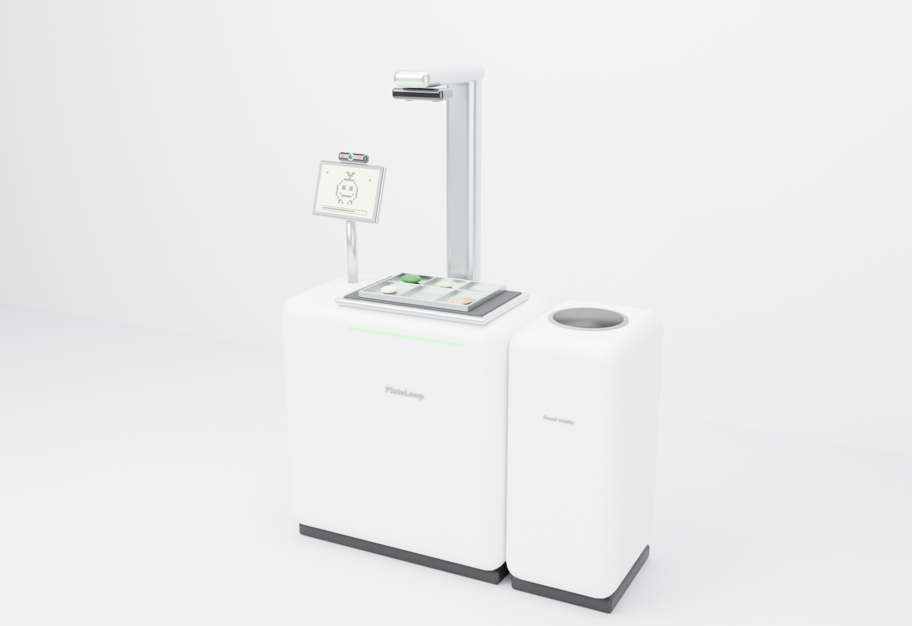

PlateLoop
Our AI food scanner automatically analyses the type and amount of food served, eaten and left, so cafeteria managers know what people actually like, order the right amount of ingredients, and waste less food and money.

The problem
Food waste is one of the main culprits of global warming.
Food prices go up every year, and strong regulations push operators to cut waste and cost at the same time.
Without consumption data, managers overproduce, and without preference data, plates come back full.
What PlateLoop does
Each person signs in with their face and scans their tray before and after the meal. The difference is exactly what they ate, dish by dish.
We predict future consumption, so the kitchen prepares and orders only what will be eaten.
Plate-waste data by dish shows what people leave, so managers can redesign the menu and adjust recipes.
Every tray shows how much CO₂ it saved, so people see their contribution and leave less.
For the kitchen
One scanner and one dashboard, including our integrated carbon management: emissions from food waste, ingredients and kitchen operations, reported toward carbon-neutral operation.
Scanner
Depth camera, scale, screen, face camera and compost bin, in 3D.
OpenKiosk
Face sign-in, the before and after scans, nutrition and CO₂ saved for every tray.
OpenKitchen
Live scans, waste by dish, forecasts and orders, and the carbon dashboard.
OpenFor the people who eat
Once they're paired by face, everyone gets their personal intake and nutrition from every meal, in an app made for them.
Loopi
A Tamagotchi fed by the lunch you really ate. Clean trays grow Loopi up, leftovers become crumbs to sweep, and you cook snacks, open crates, hatch eggs and compete on leaderboards.
OpenLoopi Care
Intake against each patient's diet, low-intake alerts, and a weekly healthcare report for the care team.
OpenLoopi Kids
An animated Loopi with sounds guides children through lunch and cheers a food rainbow. Parents and teachers each get their own section for the data.
OpenLoopi Work
Set a goal like building muscle or losing weight. Get a daily pick from the canteen, feedback like "not enough protein", and a weekly report.
OpenFor everyone (B2C): photograph a meal before and after eating to get full nutrient intake. Analysing eating habits is a long-unsolved problem in the healthcare business.
Business model
The scanner and the Kitchen dashboard, billed monthly.
For the programs on top: Loopi, Loopi Care, Loopi Kids, Loopi Work and carbon management.
Customers save on food production cost with our service.
With local and global food service companies, so one partner brings many cafeterias.
Growing awareness of the project through social media and pilot schools.
Try the demo
Lunch Rush
Walk through a school canteen as a student: get your tray, sign in at the scanner with your face, scan, sit and eat, scan again, scrape leftovers into the compost and return your tray. Your tray shows up in the other apps too.
Play- Play Lunch Rush to see a whole lunch from the student's eyes, or open the Kiosk, pick Wei Ling, and let her walk up before lunch, then after.
- Open Loopi: her lunch is in Loopi's bowl. Feed it, then sweep up the crumbs from what she left.
- Open Kitchen: the tray is in the live feed, and Carbon shows the whole cafeteria's footprint.
- Open Loopi Care, Loopi Kids or Loopi Work and scan a meal from the demo panel to see the healthcare report change. In Loopi Work, change the goal and watch the targets and the daily pick change with it.